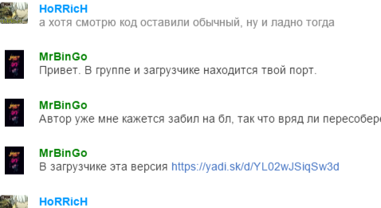
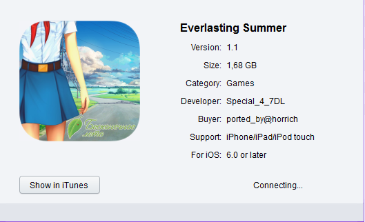

Слушайте, куда лучше про косяки писать сюда или в стим?
Пока сижу тут, пишу сюда.
Постоянная болезнь, исчезновение спрайтов.
Третий день, ОД разогнала нас с Мику. Прихожу, успокаиваю, началом танца спрайт Мику исчезает.

7 дней лета |
Вы здесь » 7 дней лета » Техподдержка » Технические проблемы

Слушайте, куда лучше про косяки писать сюда или в стим?
Пока сижу тут, пишу сюда.
Постоянная болезнь, исчезновение спрайтов.
Третий день, ОД разогнала нас с Мику. Прихожу, успокаиваю, началом танца спрайт Мику исчезает.

про косяки писать сюда или в стим?
Про вылеты и технические ошибки - в стим.
Про логические ошибки - в соответствующие разделы сюда.
Многие играют не в Стим-версию. А мод пишется на БЛ модификации 1.1, которая к Стим-версии имеет весьма далёкое отношение.
понятно, что мод под 1.1, но всё же
0.27e
I'm sorry, but an uncaught exception occurred.
While executing init code:
File "game/mods/scenario_alt/Config/conf_res_map.rpy", line 179, in script
init 5 python:
File "game/mods/scenario_alt/Config/conf_res_map.rpy", line 181, in <module>
if not config_session:
NameError: name 'config_session' is not defined-- Full Traceback ------------------------------------------------------------
Full traceback:
File "game/mods/scenario_alt/Config/conf_res_map.rpy", line 179, in script
init 5 python:
File "D:\download\everlasting_summer-1.2-all_completed\renpy\ast.py", line 785, in execute
renpy.python.py_exec_bytecode(self.code.bytecode, self.hide, store=self.store)
File "D:\download\everlasting_summer-1.2-all_completed\renpy\python.py", line 1382, in py_exec_bytecode
exec bytecode in globals, locals
File "game/mods/scenario_alt/Config/conf_res_map.rpy", line 181, in <module>
if not config_session:
NameError: name 'config_session' is not definedWindows-7-6.1.7601-SP1
Ren'Py 6.18.3.761
Everlasting Summer 1.2
версия 0.25с работает стабильно
Отредактировано Inferno (2016-03-20 18:24:24)

понятно, что мод под 1.1, но всё же
0.27e
Версия мода 0.27е для БЛ 1.2-nosteam недавно появилась в разделе "Установка" страницы мода на вики. Можно взять отсюда, например. Запускал сегодня: работает.
А так да: если пытаться ставить в БЛ 1.2-nosteam версию мода для 1.1, то будут выскакивать ошибки. Просто потому, что сами версии игры внутренне очень различаются.

Недавно эксепшен схватил когда хотел сохраниться на славя руте:
I'm sorry, but an uncaught exception occurred.
While running game code:
File "game/scenario_alt/Scenario/Done/alt_route_sl_cl.rpy", line 14551, in script
File "renpy/common/00gamemenu.rpy", line 105, in python
File "renpy/common/00gamemenu.rpy", line 145, in script
File "renpy/common/00gamemenu.rpy", line 145, in python
File "renpy/common/00action_file.rpy", line 241, in python
PicklingError: Can't pickle <class 'store.KonamiListener'>: attribute lookup store.KonamiListener failed-- Full Traceback ------------------------------------------------------------
Full traceback:
File "D:\Downloads\7DL_0.24a\Everlasting Summer\renpy\bootstrap.py", line 265, in bootstrap
renpy.main.main()
File "D:\Downloads\7DL_0.24a\Everlasting Summer\renpy\main.py", line 327, in main
run(restart)
File "D:\Downloads\7DL_0.24a\Everlasting Summer\renpy\main.py", line 78, in run
renpy.execution.run_context(True)
File "D:\Downloads\7DL_0.24a\Everlasting Summer\renpy\execution.py", line 509, in run_context
context.run()
File "D:\Downloads\7DL_0.24a\Everlasting Summer\renpy\execution.py", line 288, in run
node.execute()
File "D:\Downloads\7DL_0.24a\Everlasting Summer\renpy\ast.py", line 1309, in execute
choice = renpy.exports.menu(choices, self.set)
File "D:\Downloads\7DL_0.24a\Everlasting Summer\renpy\exports.py", line 544, in menu
rv = renpy.store.menu(items)
File "D:\Downloads\7DL_0.24a\Everlasting Summer\renpy\exports.py", line 718, in display_menu
rv = renpy.ui.interact(mouse='menu', type=type, roll_forward=roll_forward)
File "D:\Downloads\7DL_0.24a\Everlasting Summer\renpy\ui.py", line 237, in interact
rv = renpy.game.interface.interact(roll_forward=roll_forward, **kwargs)
File "D:\Downloads\7DL_0.24a\Everlasting Summer\renpy\display\core.py", line 1853, in interact
repeat, rv = self.interact_core(preloads=preloads, **kwargs)
File "D:\Downloads\7DL_0.24a\Everlasting Summer\renpy\display\core.py", line 2406, in interact_core
rv = root_widget.event(ev, x, y, 0)
File "D:\Downloads\7DL_0.24a\Everlasting Summer\renpy\display\layout.py", line 749, in event
rv = i.event(ev, x - xo, y - yo, cst)
File "D:\Downloads\7DL_0.24a\Everlasting Summer\renpy\display\behavior.py", line 289, in event
rv = run(action)
File "D:\Downloads\7DL_0.24a\Everlasting Summer\renpy\display\behavior.py", line 211, in run
return var(*args, **kwargs)
File "renpy/common/00gamemenu.rpy", line 105, in _invoke_game_menu
renpy.call_in_new_context('_game_menu')
File "D:\Downloads\7DL_0.24a\Everlasting Summer\renpy\game.py", line 279, in call_in_new_context
return renpy.execution.run_context(False)
File "D:\Downloads\7DL_0.24a\Everlasting Summer\renpy\execution.py", line 509, in run_context
context.run()
File "D:\Downloads\7DL_0.24a\Everlasting Summer\renpy\execution.py", line 288, in run
node.execute()
File "D:\Downloads\7DL_0.24a\Everlasting Summer\renpy\ast.py", line 720, in execute
renpy.python.py_exec_bytecode(self.code.bytecode, self.hide, store=self.store)
File "D:\Downloads\7DL_0.24a\Everlasting Summer\renpy\python.py", line 1304, in py_exec_bytecode
exec bytecode in globals, locals
File "renpy/common/00gamemenu.rpy", line 145, in <module>
$ ui.interact()
File "D:\Downloads\7DL_0.24a\Everlasting Summer\renpy\ui.py", line 237, in interact
rv = renpy.game.interface.interact(roll_forward=roll_forward, **kwargs)
File "D:\Downloads\7DL_0.24a\Everlasting Summer\renpy\display\core.py", line 1853, in interact
repeat, rv = self.interact_core(preloads=preloads, **kwargs)
File "D:\Downloads\7DL_0.24a\Everlasting Summer\renpy\display\core.py", line 2406, in interact_core
rv = root_widget.event(ev, x, y, 0)
File "D:\Downloads\7DL_0.24a\Everlasting Summer\renpy\display\layout.py", line 749, in event
rv = i.event(ev, x - xo, y - yo, cst)
File "D:\Downloads\7DL_0.24a\Everlasting Summer\renpy\display\transition.py", line 45, in event
return self.new_widget.event(ev, x, y, st) # E1101
File "D:\Downloads\7DL_0.24a\Everlasting Summer\renpy\display\layout.py", line 749, in event
rv = i.event(ev, x - xo, y - yo, cst)
File "D:\Downloads\7DL_0.24a\Everlasting Summer\renpy\display\layout.py", line 749, in event
rv = i.event(ev, x - xo, y - yo, cst)
File "D:\Downloads\7DL_0.24a\Everlasting Summer\renpy\display\screen.py", line 319, in event
rv = self.child.event(ev, x, y, st)
File "D:\Downloads\7DL_0.24a\Everlasting Summer\renpy\display\layout.py", line 749, in event
rv = i.event(ev, x - xo, y - yo, cst)
File "D:\Downloads\7DL_0.24a\Everlasting Summer\renpy\display\behavior.py", line 625, in event
rv = run(self.clicked)
File "D:\Downloads\7DL_0.24a\Everlasting Summer\renpy\display\behavior.py", line 204, in run
new_rv = run(i, *args, **kwargs)
File "D:\Downloads\7DL_0.24a\Everlasting Summer\renpy\display\behavior.py", line 211, in run
return var(*args, **kwargs)
File "renpy/common/00action_file.rpy", line 241, in __call__
renpy.save(fn, extra_info=save_name)
File "D:\Downloads\7DL_0.24a\Everlasting Summer\renpy\loadsave.py", line 272, in save
dump((roots, renpy.game.log), logf)
File "D:\Downloads\7DL_0.24a\Everlasting Summer\renpy\loadsave.py", line 43, in dump
cPickle.dump(o, f, cPickle.HIGHEST_PROTOCOL)
PicklingError: Can't pickle <class 'store.KonamiListener'>: attribute lookup store.KonamiListener failedWindows-post2008Server-6.2.9200
Ren'Py 6.16.3.502
Everlasting Summer 1.0
версия 027е
Вообще с новым рутом Слави куча проблем оказывается, может это быть из-за того, что прошел рут до переработки и имел кусочек мозаики?

Нет, это косяки игры, а не билда.

В 1 дне небольшая накладка.Когда он вечером заходит в столовую почему-то показывает домик Слави и Жени.В альтернивном дне это верно,но в обычном вроде бы должно быть иначе
В 1 дне небольшая накладка.Когда он вечером заходит в столовую почему-то показывает домик Слави и Жени
А вот скипать - нехорошо. Потрудитесь почитать, пожалуйста.
P.S. Это не домик Слави.
На концовке "Светлое настоящее" выбросило исключение (вылета не случилось)
I'm sorry, but an uncaught exception occurred.
While running game code:
File "game/scenario_alt/Scenario/Done/alt_route_dv_7dl.rpy", line 12969, in script
File "renpy/common/00nvl_mode.rpy", line 254, in python
IOError: Couldn't find file 'images/1080/sprites/normal/dv/dv_4_soft_smile.png'.-- Full Traceback ------------------------------------------------------------
Full traceback:
File "D:\Alcohol 120%\VN\Бесконечное лето\everlasting_summer-1.1\renpy\execution.py", line 288, in run
node.execute()
File "D:\Alcohol 120%\VN\Бесконечное лето\everlasting_summer-1.1\renpy\ast.py", line 455, in execute
renpy.exports.say(who, what, interact=self.interact)
File "D:\Alcohol 120%\VN\Бесконечное лето\everlasting_summer-1.1\renpy\exports.py", line 803, in say
who(what, interact=interact)
File "D:\Alcohol 120%\VN\Бесконечное лето\everlasting_summer-1.1\renpy\character.py", line 807, in __call__
self.do_display(who, what, cb_args=self.cb_args, **display_args)
File "renpy/common/00nvl_mode.rpy", line 254, in do_display
**display_args)
File "D:\Alcohol 120%\VN\Бесконечное лето\everlasting_summer-1.1\renpy\character.py", line 476, in display_say
rv = renpy.ui.interact(mouse='say', type=type, roll_forward=roll_forward)
File "D:\Alcohol 120%\VN\Бесконечное лето\everlasting_summer-1.1\renpy\ui.py", line 237, in interact
rv = renpy.game.interface.interact(roll_forward=roll_forward, **kwargs)
File "D:\Alcohol 120%\VN\Бесконечное лето\everlasting_summer-1.1\renpy\display\core.py", line 1853, in interact
repeat, rv = self.interact_core(preloads=preloads, **kwargs)
File "D:\Alcohol 120%\VN\Бесконечное лето\everlasting_summer-1.1\renpy\display\core.py", line 2168, in interact_core
self.draw_screen(root_widget, fullscreen_video, (not fullscreen_video) or video_frame_drawn)
File "D:\Alcohol 120%\VN\Бесконечное лето\everlasting_summer-1.1\renpy\display\core.py", line 1418, in draw_screen
renpy.config.screen_height,
File "render.pyx", line 365, in renpy.display.render.render_screen (gen\renpy.display.render.c:4568)
File "render.pyx", line 166, in renpy.display.render.render (gen\renpy.display.render.c:2033)
File "D:\Alcohol 120%\VN\Бесконечное лето\everlasting_summer-1.1\renpy\display\layout.py", line 521, in render
surf = render(child, width, height, cst, cat)
File "render.pyx", line 95, in renpy.display.render.render (gen\renpy.display.render.c:2291)
File "render.pyx", line 166, in renpy.display.render.render (gen\renpy.display.render.c:2033)
File "D:\Alcohol 120%\VN\Бесконечное лето\everlasting_summer-1.1\renpy\display\layout.py", line 521, in render
surf = render(child, width, height, cst, cat)
File "render.pyx", line 95, in renpy.display.render.render (gen\renpy.display.render.c:2291)
File "render.pyx", line 166, in renpy.display.render.render (gen\renpy.display.render.c:2033)
File "D:\Alcohol 120%\VN\Бесконечное лето\everlasting_summer-1.1\renpy\display\layout.py", line 521, in render
surf = render(child, width, height, cst, cat)
File "render.pyx", line 95, in renpy.display.render.render (gen\renpy.display.render.c:2291)
File "render.pyx", line 166, in renpy.display.render.render (gen\renpy.display.render.c:2033)
File "D:\Alcohol 120%\VN\Бесконечное лето\everlasting_summer-1.1\renpy\display\image.py", line 164, in render
return wrap_render(self.target, width, height, st, at)
File "D:\Alcohol 120%\VN\Бесконечное лето\everlasting_summer-1.1\renpy\display\image.py", line 54, in wrap_render
rend = render(child, w, h, st, at)
File "render.pyx", line 95, in renpy.display.render.render (gen\renpy.display.render.c:2291)
File "render.pyx", line 166, in renpy.display.render.render (gen\renpy.display.render.c:2033)
File "D:\Alcohol 120%\VN\Бесконечное лето\everlasting_summer-1.1\renpy\display\layout.py", line 263, in render
surf = render(self.child, width, height, st, at)
File "render.pyx", line 95, in renpy.display.render.render (gen\renpy.display.render.c:2291)
File "render.pyx", line 166, in renpy.display.render.render (gen\renpy.display.render.c:2033)
File "D:\Alcohol 120%\VN\Бесконечное лето\everlasting_summer-1.1\renpy\display\layout.py", line 1031, in render
return renpy.display.render.render(self.child, w, h, st, at)
File "render.pyx", line 95, in renpy.display.render.render (gen\renpy.display.render.c:2291)
File "render.pyx", line 166, in renpy.display.render.render (gen\renpy.display.render.c:2033)
File "D:\Alcohol 120%\VN\Бесконечное лето\everlasting_summer-1.1\renpy\display\im.py", line 463, in render
im = cache.get(self)
File "D:\Alcohol 120%\VN\Бесконечное лето\everlasting_summer-1.1\renpy\display\im.py", line 196, in get
surf = image.load()
File "D:\Alcohol 120%\VN\Бесконечное лето\everlasting_summer-1.1\renpy\display\im.py", line 1062, in load
surf = cache.get(self.image)
File "D:\Alcohol 120%\VN\Бесконечное лето\everlasting_summer-1.1\renpy\display\im.py", line 196, in get
surf = image.load()
File "D:\Alcohol 120%\VN\Бесконечное лето\everlasting_summer-1.1\renpy\display\im.py", line 611, in load
rv.blit(cache.get(im), pos)
File "D:\Alcohol 120%\VN\Бесконечное лето\everlasting_summer-1.1\renpy\display\im.py", line 196, in get
surf = image.load()
File "D:\Alcohol 120%\VN\Бесконечное лето\everlasting_summer-1.1\renpy\display\im.py", line 507, in load
surf = renpy.display.pgrender.load_image(renpy.loader.load(self.filename), self.filename)
File "D:\Alcohol 120%\VN\Бесконечное лето\everlasting_summer-1.1\renpy\loader.py", line 428, in load
raise IOError("Couldn't find file '%s'." % name)
IOError: Couldn't find file 'images/1080/sprites/normal/dv/dv_4_soft_smile.png'.Windows-post2008Server-6.2.9200
Ren'Py 6.16.3.502
Everlasting Summer 1.0

У меня периодически возникает проблема со сбросом "памяти" предыдущих прохождений. Это проблема мода или самой игры? Если кто знает, как этого избежать/вылечить?
Если кто знает, как этого избежать/вылечить?
Никак, товарищ Скаффин.
Изменения рандомны. А удаление папки scenario_alt приводит к удалению фиксации и прочитанных строк.
Никак, товарищ Скаффин.
Изменения рандомны. А удаление папки scenario_alt приводит к удалению фиксации и прочитанных строк.
Я вроде не удалял, а сверху папку ставил. Может, подскажете, где хранится память о пройденном? Я попробую этот файл скопировать в другое место и поменять, если снова слетит - может, прокатит.
Отредактировано Skaffin (2016-03-26 21:45:46)
*задумчиво* вроде я где-то читал, что "память" модов сейвится в одном каком-то файле, для всех. Может, это persistent, который в сейвах валяется? Хотя попробую забэкапить все, гулять так гулять)
Может, это persistent, который в сейвах валяется?
Персистент у Вас не меняется как нужно.
Там сохраняются всё равно данные об гудах Алисы или Лены для сердечка - это факт.
Если Элд заглянет, то он явно компетентнее меня объяснит.
Отредактировано Dantiras (2016-03-26 21:59:28)

В общем сделал я полноценный порт версии 1.1 для iOS , не могли бы посмотреть какие bg/cg остались хвостами от других модов или какие лишние удалил? и по возможности хотелось чтобы мой порт пошел не страницу в вики чтобы делать порт 7ДЛ для iOS без стимокостылей, народ как я заметил начал на стим плеваться в плане цензуры, так что мой порт пригодится всем пользователям с джейлом  https://yadi.sk/d/x5wjLBRhqaDux
https://yadi.sk/d/x5wjLBRhqaDux
Отредактировано HoRRicH (2016-03-30 13:44:37)
Посмотреть прямо сейчас не смогу, и ближайший месяц не смогу по техническим причинам.
А на вики можешь сам добавить, там страница легко редактируемая.

Я чего-то не понимаю? Для iOS уже всё сделали вот эти ребята - https://vk.com/esmanager. Я лично первый раз добавлял ссылку в вики - дальше они сами обновляли.
Я чего-то не понимаю? Для iOS уже всё сделали вот эти ребята - https://vk.com/esmanager. Я лично первый раз добавлял ссылку в вики - дальше они сами обновляли.
Разница в том, что там порт 1.2 из стима, и опять же мод и порт который корректирую я

Но с обновой renpy в стиме боюсь расхождения в скриптах пойдут все больше и больше от версии из игры из Appstore.Пока на уровне conf_res_scr.rpy, да и премодерация на адулт контент там.
А тут игра собранная с 0 на базе БЛ 1.1 чтобы костылями не страдать и применять 7ДЛ с поправкой управления в QTE и немного уменьшая анимацию в начале где Семен вспоминает.В общем предлагаю именно порт игры версии 1.1
Отредактировано HoRRicH (2016-03-30 18:01:08)
То есть мобильный стим на яблоках даёт доступ к играм?! Я думал, там только чятик.
То есть мобильный стим на яблоках даёт доступ к играм?! Я думал, там только чятик.
Да нет, ты немного не понял,в Appstore попала к нам БЛ версии 1.2 на базе стим версии (на тот момент там выходил рут Жени). Так получилось что автор выложивший игру в апстор исчез , сайт не работает, на форумах (4PDA в частности) тоже появляться не стал, и у нас назрела проблема того, что в игру нужно вносить правки.Я делал мод, который подпиливал на предмет хентай мода в меню и галерею делал как в 1.1 3*3 чтобы она не лагала и не крашилась и небольшие правки шрифтов.
В итоге на прошлой неделе в стиме обновили сам движок Renpy и у нас пошли расхождения в порте 7DL из стим в конф файлах , вдобавок 7ДЛ вела себя и ранее не всегда адекватно на 1.2, проблемы с точками сейвов, не видел bg/cg, которые лежали в нужных местах, чибики некорректно отображались на карте . В общем я решил что лучше чем возится с выпрямлениями конфигов и поисков почему не работают пикчи и некорректно отображаются чибики на картах собрать свой собственный порт на базе 1.1 чтобы не мучится каждый раз с обновой 7ДЛ. Вроде бы допилил сегодня окончательно, погонял по концовкам, прошел пару рутов , трейсов вроде не встретил. Погоняю еще немного чтобы быть уверенным на 100% и можно будет на вики добавить как база для установки 7ДЛ для iOS

Отредактировано HoRRicH (2016-03-31 13:24:00)
Так эта, тогда нужно в аппстор 1.1 продвинуть. Иначе это будет интересно 3.5 анонимусам.
Так эта, тогда нужно в аппстор 1.1 продвинуть. Иначе это будет интересно 3.5 анонимусам.
Ну это понятно, но для начала разберусь как следует в Xcode и Renpy ios чтобы настроить все как часики , а потом уже 100$ платить надо будет за право быть полноценным девелопером с правом публикации для ios на год, либо искать того кто сможет опубликовать. Для начала надо будет сделать скрытый код для включения хентая , так как апстор модерирует строже стима, благо управление жестами позволяет биндить сложные свайпы , ну и конечно надо сделать чтобы папка для шары доступная на иос была рабочей в плане установки модов. И также надо будет разговаривать с самими разрабами БЛ чтобы они дали добро + если так смотреть БЛ то уже есть в сторе , нужна причина для того чтобы доказать что именно моя работа стоит публикации. В общем для оф релиза нужно еще думать что и как реализовать. Пока надо сделать обкатку на джейле и тех, кто подписывает игры сертификатом без джейла. По большому счету я бы хотел опубликовать и Katawa Shoujo она вроде тоже свободна к распространению, вчера собрал порт и выложил у нас. Посмотрю отзывы людей о работе
Отредактировано HoRRicH (2016-03-31 13:56:00)
В строке 14831 alt_route_sl_cl.rpy вместо jump alt_day7_sl_rf должно быть jump alt_day7_sl_rf_good, иначе вылет:
ТРАЙСБЕК_ТАЙМ
"I'm sorry, but an uncaught exception occurred.
While running game code:
File "game/scenario_alt/Scenario/Done/alt_route_sl_cl.rpy", line 15204, in script
ScriptError: could not find label 'alt_day7_sl_rf'.
-- Full Traceback ------------------------------------------------------------
Full traceback:
File "C:\Program Files\Everlasting Summer\renpy\bootstrap.py", line 265, in bootstrap
renpy.main.main()
File "C:\Program Files\Everlasting Summer\renpy\main.py", line 327, in main
run(restart)
File "C:\Program Files\Everlasting Summer\renpy\main.py", line 78, in run
renpy.execution.run_context(True)
File "C:\Program Files\Everlasting Summer\renpy\execution.py", line 509, in run_context
context.run()
File "C:\Program Files\Everlasting Summer\renpy\execution.py", line 288, in run
node.execute()
File "C:\Program Files\Everlasting Summer\renpy\ast.py", line 1376, in execute
rv = renpy.game.script.lookup(target)
File "C:\Program Files\Everlasting Summer\renpy\script.py", line 547, in lookup
raise ScriptError("could not find label '%s'." % str(label))
ScriptError: could not find label 'alt_day7_sl_rf'.
Windows-7-6.1.7601-SP1
Ren'Py 6.16.3.502
Everlasting Summer 1.0"
2 дня назад; AHuMEIIIHuK

Когда играю карточный турнир, всегда пропускается финал (доходил Локи и Герком). За Герка выходил на нуар рут, дальше сообщение что он в разработке и ВНЕЗАПНО меня перекинуло на тот самый финал обратно в день 2. Ну и дальше можно было снова проходить. %)
А еще я вдруг понял, что у меня не 0.27f, а 0.27d, может в этом дело?))
Отредактировано Shatalkir (2016-05-29 13:28:44)
А еще я вдруг понял, что у меня не 0.27f, а 0.27d, может в этом дело?))
В этом самом.
В ранних 0,27-версиях изменялся радикально код и применялись многочисленные команды return, которые возвращают на 1 шаг назад. При неверном использовании оно возращало не к развилке на продолжение, а к исходному моменту - что и случилось в Вашем случае.
В 0,27e-f версиях такой проблемы уже нет.
Отредактировано Dantiras (2016-05-29 21:28:49)
При попытке выйти на концовку классик рута Слави "Плюс-минус полчаса (РФ)" ловлю вот такую ошибку
I'm sorry, but an uncaught exception occurred.
While running game code:
File "game/scenario_alt/Scenario/Done/alt_route_sl_cl.rpy", line 15204, in script
ScriptError: could not find label 'alt_day7_sl_rf'.-- Full Traceback ------------------------------------------------------------
Full traceback:
File "E:\everlasting_summer-1.2-all\0.27d + mod-pack\Everlasting Summer\renpy\bootstrap.py", line 265, in bootstrap
renpy.main.main()
File "E:\everlasting_summer-1.2-all\0.27d + mod-pack\Everlasting Summer\renpy\main.py", line 327, in main
run(restart)
File "E:\everlasting_summer-1.2-all\0.27d + mod-pack\Everlasting Summer\renpy\main.py", line 78, in run
renpy.execution.run_context(True)
File "E:\everlasting_summer-1.2-all\0.27d + mod-pack\Everlasting Summer\renpy\execution.py", line 509, in run_context
context.run()
File "E:\everlasting_summer-1.2-all\0.27d + mod-pack\Everlasting Summer\renpy\execution.py", line 288, in run
node.execute()
File "E:\everlasting_summer-1.2-all\0.27d + mod-pack\Everlasting Summer\renpy\ast.py", line 1376, in execute
rv = renpy.game.script.lookup(target)
File "E:\everlasting_summer-1.2-all\0.27d + mod-pack\Everlasting Summer\renpy\script.py", line 547, in lookup
raise ScriptError("could not find label '%s'." % str(label))
ScriptError: could not find label 'alt_day7_sl_rf'.Windows-post2008Server-6.2.9200
Ren'Py 6.16.3.502
Everlasting Summer 1.0
Доходит до выбора действия в пустом автобусе, я нажимаю "Пойти посмотреть снаружи", дальше идет немного текста и вот.
Игру качал вот здесь, мод заменял потом на актуальный.
Отредактировано Shatalkir (2016-06-04 18:20:28)
alt_day7_sl_rf
Старая ошибка 0,27 версии из-за неверно прописанного перехода (сообщалось о ней неоднократно). На 1.2 платформах её даже исправили.
Отредактировано Dantiras (2016-06-06 09:26:16)
Помогите у меня такая ошибка вылетает при запуске: I'm sorry, but an uncaught exception occurred.
While loading the script.
ScriptError: Name u'alt_day1_start' is defined twice: at game/scenario_alt/Scenario/Done/alt_route_common.rpy:1177 and game/scenario_alt/alt_day1.rpy:24.
-- Full Traceback ------------------------------------------------------------
Full traceback:
File "C:\Users\Monster\Downloads\Everlasting Summer\Everlasting Summer\renpy\bootstrap.py", line 265, in bootstrap
renpy.main.main()
File "C:\Users\Monster\Downloads\Everlasting Summer\Everlasting Summer\renpy\main.py", line 226, in main
renpy.game.script.load_script() # sets renpy.game.script.
File "C:\Users\Monster\Downloads\Everlasting Summer\Everlasting Summer\renpy\script.py", line 177, in load_script
self.load_appropriate_file(".rpyc", ".rpy", dir, fn, initcode)
File "C:\Users\Monster\Downloads\Everlasting Summer\Everlasting Summer\renpy\script.py", line 436, in load_appropriate_file
if self.load_file(dir, fn + compiled, initcode):
File "C:\Users\Monster\Downloads\Everlasting Summer\Everlasting Summer\renpy\script.py", line 320, in load_file
self.finish_load(stmts, initcode)
File "C:\Users\Monster\Downloads\Everlasting Summer\Everlasting Summer\renpy\script.py", line 392, in finish_load
node.filename, node.linenumber))
ScriptError: Name u'alt_day1_start' is defined twice: at game/scenario_alt/Scenario/Done/alt_route_common.rpy:1177 and game/scenario_alt/alt_day1.rpy:24.
Windows-7-6.1.7601-SP2
Ren'Py 6.16.3.502
После перестановки мода выходит:
I'm sorry, but an uncaught exception occurred.
While executing init code:
File "game/scenario_alt_027f/scenario_alt/Config/conf_res_wdg.rpy", line 2, in script
File "game/scenario_alt_027f/scenario_alt/Config/conf_res_wdg.rpy", line 2, in python
NameError: name 'filters' is not defined
-- Full Traceback ------------------------------------------------------------
Full traceback:
File "C:\Users\Monster\Downloads\Everlasting Summer\Everlasting Summer\renpy\bootstrap.py", line 265, in bootstrap
renpy.main.main()
File "C:\Users\Monster\Downloads\Everlasting Summer\Everlasting Summer\renpy\main.py", line 263, in main
game.context().run(node)
File "C:\Users\Monster\Downloads\Everlasting Summer\Everlasting Summer\renpy\execution.py", line 288, in run
node.execute()
File "C:\Users\Monster\Downloads\Everlasting Summer\Everlasting Summer\renpy\ast.py", line 720, in execute
renpy.python.py_exec_bytecode(self.code.bytecode, self.hide, store=self.store)
File "C:\Users\Monster\Downloads\Everlasting Summer\Everlasting Summer\renpy\python.py", line 1304, in py_exec_bytecode
exec bytecode in globals, locals
File "game/scenario_alt_027f/scenario_alt/Config/conf_res_wdg.rpy", line 2, in <module>
$ filters["widget__7dl_widget"] = u"Прогресс и информация по моду 7ДЛ"
NameError: name 'filters' is not defined
Windows-7-6.1.7601-SP2
Ren'Py 6.16.3.502
Everlasting Summer 1.0
Name u'alt_day1_start' is defined twice
Две папки мода зачем-то сохранили. Нужно одну удалить.
Вы здесь » 7 дней лета » Техподдержка » Технические проблемы